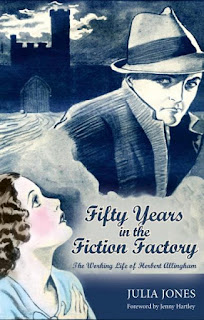
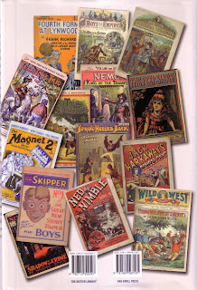

From the Penny Dreadful to the Halfpenny Dreadfuller by Robert J. Kirkpatrick – it's my current reading and what a handsome volume! Published by the British Library, 576 pages, copiously illustrated indexed, appendicised, footnoted, bibliographed; rrp £50 and weighs in at a thunderous 1.6kg. It almost certainly costs more (£6.50, second class, £7.95 first) to post a single copy than the hapless author or even the publisher will expect to earn.
{kind=link}
I mention
this fact not only as a thank you to Robert for his generosity in
sending me this copy (and because I'm incensed by the current Royal
Mail hike in parcel costs) but
also as a passing reminder that every development in publishing is
inextricably linked to the current state of the distribution network.
As a print publisher I howl with anguish every time I do my sums and
remind myself that to post a single copy of even my paperback books
costs almost as much as I paid to have them printed. As an
e-publisher I tremble to think what would happen to our business if
we could no longer take our electricity supply or the internet as
completely for granted as we currently take .. let's say water.
Imagine this dystopian future or think back to the powercuts of the
1970s (or even droughts and hose-pipe bans). Even now digital publishers would be wise to bear in mind the
inequalities in the broadband system. I live in the country, lucky
me, but please don't bother sending me your promotional videos –
with a 10KB/s download speed I'm unlikely to click the link. I can
only hope that, after Royal Mail has been cynically sold off, I'll
still see the postman come staggering up the path.
From
the Penny Dreadful to the Halfpenny Dreadfuller is a
bibliographic history of the boys' periodical in Britain from
1762-1950. It therefore pre-dates both the coming of the railways and
the penny post. Two developments which began to revolutionise the
reading – and publishing – habits in this country. Before that,
as Kirkpatrick mentions, distribution was very much more a by-hand
affair. Some of the earliest periodicals for children were either
linked closely with the book trade and published by subscription (eg
Newbery) or were instructional in content and circulated via closed
communities such as the public schools. The available means of
distribution defined the content. I would suggest that it still does.
I
wondered why I didn't entirely agree with Kathleen Jones's admirably
polemical blogpost “A Short History of [Self] Publishing” and I
realised that we may have a different understanding of what
constitutes a “publisher”. The most basic form of publisher, for me, is the one who
gets the writer's content to the public. A disseminator, in fact.
Pure self-publishing is when you produce the content, pay the
printer (or act as your own printer) and then distribute to readers
whose interest you have personally solicited. If you, as author, take
responsibility for the dissemination, you can write what the heck you
like (as long as it's within the law). As the biographer of Margaret
Cavendish, Duchess of Newcastle, KJ understands this very well: “Back
in the 16th and 17th centuries all you needed
was a purse stuffed with cash and a printer.” You could
give your work away if you had the distribution sorted.
Robert Kirkpatrick points out that the huge success of the tract movement and juvenile religious magazines in the first half of the c19th was partly due to the fact that distribution could be managed for nothing through altruistic volunteers – all those eager Sunday School teachers and philanthropic visitors in poor areas. We can still do this if we choose. The pure self-publishers are those (like Dan Holloway?) who retain the direct disseminating link between themselves and their readers – who do not, for instance, use Amazon as their publisher / bookseller / distributor, as most of us do.
Robert Kirkpatrick points out that the huge success of the tract movement and juvenile religious magazines in the first half of the c19th was partly due to the fact that distribution could be managed for nothing through altruistic volunteers – all those eager Sunday School teachers and philanthropic visitors in poor areas. We can still do this if we choose. The pure self-publishers are those (like Dan Holloway?) who retain the direct disseminating link between themselves and their readers – who do not, for instance, use Amazon as their publisher / bookseller / distributor, as most of us do.
Even in
the c16th and c17th if an author or a printer wanted to reach the
masses but had the commoner type of purse that required
cash-replenishment, they had to use middle-men for dissemination.
These were the chapmen. The writer wrote, the printer printed and the
chapmen set off into the countryside with a stack of ballads or
adventure stories in their sack. When they came back for more they
paid for what they'd sold. Okay, so chapmen were itinerant booksellers rather than publishers but they were integral to the system. Some types of story sold better than others in different areas and to different purchasers -- so the printers printed more of those. The means of
distribution began influencing the balance of content. Thrilling stories of
devils and heroes were more commercially successful in a peddler's pack than philosophical treatises – and I suggest that in the current ebook market this is
equally the case.
The biggest of all the factors that influenced reading, writing and publishing, even before education, was urbanisation. By the mid c19th Britain was the first country in the world where more people lived in towns than in the country. That, coupled with the advances in communication (represented by the railways) and the advances in technology (represented by steam-power), meant that there was plenty of room – and even a need – for additional middlemen between writers, printers, distributors and the toiling masses who needed just a little something, apart from gin, religion or sex, to beguile their leisure moments. These additional middlemen were organisers and facilitators. They were obviously publishers and they often added a flair for knowing what the public would enjoy even before the street-sellers reported back. They played their part in moving the industry on.
The biggest of all the factors that influenced reading, writing and publishing, even before education, was urbanisation. By the mid c19th Britain was the first country in the world where more people lived in towns than in the country. That, coupled with the advances in communication (represented by the railways) and the advances in technology (represented by steam-power), meant that there was plenty of room – and even a need – for additional middlemen between writers, printers, distributors and the toiling masses who needed just a little something, apart from gin, religion or sex, to beguile their leisure moments. These additional middlemen were organisers and facilitators. They were obviously publishers and they often added a flair for knowing what the public would enjoy even before the street-sellers reported back. They played their part in moving the industry on.
{kind=link}

Robert Kirkpatrick charts the spectacular rise of the 'penny blood' in the entrepreneurial hands of Edward Lloyd and GWM Reynolds during the 1830s and 1840s, then its much more significant development via the 'penny dreadfuls' of Edwin Brett or the Newsagent Publishing Company or the Emmett family (or anyone else whose products you disapproved of – and who therefore deserved this opprobrious term). The spread of education and literacy, new technology and suburbanisation then spawned the vastly successful 'halfpenny dreadfullers' of the Harmsworth brothers of the 1890s.
The Harmsworths (founders of the Daily Mail) appeared to take the side of the moral majority (eg as represented by the Religious Tract Society, publishers of the Boys' Own Paper) and pretended to disapprove of the penny dreadfuls whilst re-using their most successful motifs with what Kirkpatrick calls “panache, style and breathtaking hypocrisy”. They assumed control of the means of production (from pulp-producing forests to word-producing authors), introduced new technology streamlined distribution and cut prices to the consumer. No wonder their newspapers and magazines were successful far into the twentieth century. And, as I discovered in Fifty Years in the Fiction Factory my biography of Herbert Allingham, their writers could prosper with them – as long as they were prepared to accept anonymity and powerlessness. I could think of the Harmsworths as the Amazon of their day -- except that part of my belief is that different periods have different circumstances and writers within those periods all have to find their different answers to the same question: how to get words to readers. There must, I suggest, almost always be something or someone in the middle.
“The
story of the boys's periodical,” concludes Kirkpatrick, “was not
only one of rivalry and fierce competition and particular type of
sensational literature, but it was also a story of opportunism
persistence, optimism, ambition, guile, hypocrisy, financial
ineptitude, hard work and inventiveness. Only a few of these involved
are known and recognised today, while most – writers, editors
publishers – have left little mark on history, having lived and
died in relative obscurity. Perhaps this book should be regarded as
their memorial.”
If we play the substitution game and pick from
this list of value words to describe “the story of independent
e-publishing” I wonder which ones we'd choose? Not, I think
“rivalry and fierce competition” – amongst ourselves, at least.
Though we might want to keep a check on the way we think and speak of
others whose work is published differently. Different publishing
modes may suit different authors and different types of work. It need
not be polarised between Good and Bad.
Kathleen
Jones did not use the term "legacy publishing" in her post but it was
used in the comments and I spent a little while thinking about the way it has come to be used in the indie publishing community. It
originated in the US in the early summer of 2011 as a term of
opprobrium. As Courtney Milan explains, “the point of using the
term "legacy publishing" is that it conveys instantly what you think
of traditional publishers: that you think they are old and
inefficient and outmoded”. She dislikes this. “Vocabulary matters. Vocabulary that is chosen to insult people … has an effect. It
immediately closes down conversation with people who do not agree
with you.” Rather like stigmatising something as "penny dreadful"? I think in our (semi) independent-sector we have
experienced enough linguistic contempt NOT to want to indulge in
retaliation. Hypocrisy is possibly a besetting British sin – that
and a propensity to disapprove of the neighbours (in this case "legacy publishers") . I think we could usefully cross hypocrisy off
our personal list and be a little more thoughtful about our choice of words.
I think a
legacy is a good thing – if it's a good legacy. I was able to write
Fifty Years in the Fiction Factory because of a legacy. That
legacy was an archive that could not be shared in its current form:
it needed work to turn it first into a thesis (available free at www.fiftyyearsinthefictionfactory.com or via the British Library lending service as Family Fictions).
Then I turned it into a biography which I disseminated as a paperback and as
an ebook for the general reader. I was surprised at the difficulty of
the changes I needed to make just to alter from thesis to biography.
Format and content were a complex mix.
 |
| Back cover - copious illustrations throughout |
{kind=link}
From
the Penny Dreadful to the Halfpenny Dreadfuller is a hugely
impressive bibliographic achievement. Robert Kirkpatrick hopes that
his book will become “a memorial” – a tribute to the forgotten
workers. Not so far from a legacy? He must have devoted decades to
gathering the material necessary for his comprehensive checklist of
over 600 titles – and that's without the knowledge and insight
required to order his research into an interesting and non-simplistic
historical narrative. If I suggest that this is obsession on the
grand scale I intend a heartfelt compliment. As I tried to find my
way through the publishing exuberance and the writerly activity of
the late c19th and early c20th I felt a profound gratitude for the
collectors and the list-makers and the fact-checkers who have not
only spent time in storage rooms and libraries but who have swapped
and shared and debated learned articles on infinitesimally fine
points. They are the unsung heroes of book history. I hope that
Kirkpatrick's achievement will be SUNG. I hope it will endure and be
his legacy. I notice that it is only currently available as a
hardback print publication. I wonder whether the British Library
intends that it should stay that way?